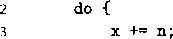

goto loop;
也就是说，每次循环，程序会执行循环体里的语句，然后执行测试表达式。如果测试为真，则回 去再执行一次循环。
看一个示例，图3-14a给出了一个函数的实现，用do-while循环计算函数参数的阶乘, 写作n!。这个函数只计算《 > 0时”阶乘的值。
Argument ： |
n at %ehp+8 |
||
Registers |
:n in %edx, result |
in %eax |
|
1 |
movl |
8(%ebp), %edx |
Get n |
2 |
movl |
$1, °/ 0 eax |
Set result = 1 |
3 |
.L2: |
loop: |
|
4 |
imull |
%edx, %eax |
Compute result n |
5 |
subl |
$1, %edx |
Decrement n |
6 |
cmpl |
$1, %edx |
Compare n：l |
7 |
jg |
.L2 |
If >, goto loop |
Return . |
result |
图3-14阶乘程序的do-while版本的代码。给出了 C代码、产生的汇编代码和寄存器使用表
int fact_do(int n) i
int result = 1; do {
result *= n; n = n-1;
> while (n > 1); return result;
a) C代码
寄存器 |
变量 |
初始值 |
%eax |
result |
1 |
%edx |
n |
n |
b)寄存器使用 c)对应的汇编代码
_练习题3.19
用一个 32 位 int 表示 n! ,最大的 n 的值是多少？
如果用一个 64 位 long long int 表示，最大的 n 的值是多少？
图3-14c中所示的汇编代码是一个do-while循环的标准实现。寄存器％edx保存n, %eax 保存result,遵循它们的初始值，程序开始循环。先执行循环的主体，这里是由更新变量 result和n (4〜5行).组成。然后再测试《>1,如果是真，则跳回到循环的开始。这里的条 件跳转（第7行）是实现循环的关键指令，它判断是继续循环还是退出循环。
确定哪些寄存器存放哪些程序值可能会很有挑战性，特别是在循环代码中。图3-14给出 了这样一种映射关系。在这种情况下，映射关系很好确定：可以看到n在第1行被加载到寄存 器％6€^中，第5行会被减1,在第6行测试它的值。因此我们断定这个寄存器存放的是ru 我们可以看到寄存器％eax被初始化为1 (第2行)，在第4行被乘法更新。进一步说，因 S%eax被用来返回函数的值，所以常常选它存放要返回的程序值。所以我们断定％eax对应于 程序值result。
逆向工程循环
理解产生的汇编代码与雇始源代码之间的关系，关键是找到程序值和寄存器之间的映射关 系。对于图3-14的循环来说，这个任务非常简单，但是对于更复杂的程序来说，就可能是更具 挑战性的任务。C语言编译器常常会重组计算，因此有些C代码中的变量在机器代码中没有对
应的值；而有时，机器代码中又会引入源代码中不存在的新值。此外，编译器还常常试图将多个 程序值映射到一个寄存器上，来最小化寄存器的使用率。
我们描述fact_do的过程对于逆向工程循环来说，是一个通用的策略。看看在循环之前如 何初始化寄存器，在循环中如何更新和测试寄存器，以及在循环之后又如何使用寄存器。这些步 骤中的每一步都提供了一个线索，组合起来就可以解开谜团。做好准备，你会看到令人惊奇的变 换，其中有些情况很明显是编译器能够优化代码，而有些情况很难解释编译器为什么要选用那些 奇怪的策略。拫据我们的经验，GCC常常做的一些变换，非但不能带来性能好处，反而甚至可 能降低代码性能。
_练习题3.20巳知C代码如下：

1 int dw_loop(int x, int y, int n) {
A y *= n;
n——;
} while ((n > 0) && (y < n));
return x;
>
GCC产生的汇编代码如下：
x at %ebp+S t y at %ebp-fi2, n at %ebp+:/ 6
|
1 |
movl |
8(7 0 ebp), %eax |
|
2 |
movl |
12(%ebp), %ecx |
|
3 |
movl |
16(%ebp), %edx |
|
4 |
.L2: |
|
|
5 |
addl |
°/ 0 edx, %eax |
|
6 |
imull |
%edx, %ecx |
|
7 |
subl |
$1, %edx |
|
8 |
testl |
%edx, %edx |
|
9 |
jle |
.L5 |
|
10 |
cmpl |
°/ 0 edx, %ecx |
|
11 |
jl |
.12 |
|
12 |
• L5: |
创建一个寄存器使用表，参考图3-14b。 •
指出 C 代鸪中的 test-expr 和 body^tatement, 以及汇编代码中相应的行。
给汇编代码添加一些注释，播述程序的操作，参考图3-14b。
White循环
while i吾句的通用形式如下：
while, (test-expr) …
body-statement
与do-while不同的是，它对如/-叫求值，在第一次执行jbody-state/nent之前，循环就 可能中止。将while循环翻译成机器代码有很多种方法。一种常见的方法，也是GGC釆用的方法, 是使用条作分支，在需要时省略循环体的第一次执行,从而将代码转换成doihile循环，如下：
* . ‘ _ ： . ' ‘ • * f . if (! test-expr) goto done;
do
body-statement while (test-expr );
done: .
接下来，这个代码可以直接翻译成goto代码，如下：
t = test-expr •， if (!t)
goto done;
loop:
body-statement t = test-expr; if (t)
goto loop;
done:
使用这种实现策略，编译器常常会优化最开始的测试，比如说认为总是满足测试条件。
举个例子，图3-15是使用while循环的阶乘函数的实现（图3-15a)。这个函数能够正确地 计算0!-1。它旁边的函数fact 一 while 一 goto (图3-15b)是GCC产生的汇编代码的(：语言 翻译。比较fact_while (图3-15)和fact_do (图3-14)的代码，我们看到它们几乎是相 同的。唯一的不f点是初始的测试（第3行）和循环的跳转（第4行)。将while循环转换成 do-while循环，以及将后者翻译成goto代码，编译器使用的模板与我们的差不多。
|
int fact_while_goto(int n) -r |
||
|
z \ 3 int result - 1; |
||
|
4 if (n <= 1) |
||
|
i int fact_while(int n) |
s goto done; |
|
|
2 { |
6 loop: |
|
|
3 int result = 1; |
7 result *= n; |
|
|
4 while (n > 1) { |
8 n = n_l; |
|
|
5 result n; |
9 if (n > 1) |
|
|
6 n = n_l; |
10 goto loop; |
|
|
7 > |
11 done : |
|
|
return result ; > |
12 return result ; 1¾ > |
|
a)C 代码 b) 等价的 goto 版本
Argument ; |
n at 7,ebp+5 |
||
Registers |
:n in %ed.x, result |
in %eax |
|
1 |
movl |
8(%ebp), %edx |
Get n |
2 |
movl |
$1, %eax |
Set result = 1 |
3 |
cmpl |
$1, %edx |
Compare n:1 |
4 |
jle |
.L7 |
If <~, goto don© |
•5 |
• L10: |
loop: |
|
6 |
imull |
%edx, %eax |
Compute result n |
7 |
subl |
$1, %edx |
Decrement n |
8 |
cmpl |
$1， %edx |
Compare n:1 |
9 |
jg |
.L10 |
If >, goto loop |
10 |
.L7: |
done: |
|
Return . |
result |
O对应的汇编代码
图3-15阶乘的while版本的C代码和汇编代码。fact—while—goto函数说明了汇编代码版本的操作
_练习题3.21对于下面的C代码：
int loop_while(int a, int b)
{
int result = 1;
while (a < b) {
result *= (a+b);
a++;
>
return result;
GCC产生如下汇编代码
2
3
4
5
6
7
9 0 1 2 3
at %ebp+S. movl movl movl cmpl
jge
leal movl • L12: imull addl addl cmpl jg .Lll:
b at %ebp+i2 8(%ebp), %ecx 12(%ebp) , °/ 0 ebx $1, %eax %ebx, %ecx .Lll
(7«ebx,7 0 ecx), °/ 0 edx $1, °/ 0 eax
%edx, °/ 8 eax $1, %ecx $1, °/ 0 edx %ecx, %ebx .L12
在产生这段代码的过程中，GCC做了一个有趣的转换，实际上是引入了一个新的程序变量。
在第6行初始化寄存在第11行循环体内更新它的值。让我们认为这是一个新的程序变 量。请描述它与C代码中的变量之间的关系。
创建该函数的寄存器使用表。
给汇编代码添加一些注释，描述它的操作。
(用C语言）写一个该函数的goto版本，用它模仿汇编代码程序如何运行。
®练习题3.22函数如下整体结构：
int fun_a(unsigned x) { int val = 0; while ( ) {
>
return
GCC C编译器产生如下汇编代码：
x at %ebp+S ^ movl 8(%ebp), %edx
movl $0, 0 / 0 eax
testl °/ 0 edx, %edx
je .L7
.L10:
xorl %edx, %eax
shrl %edx Shift right by i
jne .L10
.L7:
andl $1, %eax
逆向工程这段代码的操作，然后完成下面的作业：
根据汇编代码版本填写C代码中缺失的部分。
用自然语言描述这个函数是计算什么的。
for循环
for循环的通用形式如下：
for {init-expr ; test-expr ; update-expr) body-statement
C语言标准说明（有一个例外，练习题3.24中有特别说明），这样■^个循环的行为与下面这 段使用while循环代码的行为一样：
init-expr ;
while (test-expr) { body-statement update-expr;
>
程序首先对初始表达式init-expr求值，然后进入循环；在循环中它先对测试条件 test-expr 求值，如果测试结果为“假”就会退出，否则执行循环体M办-最后对更新表达式 update-expr 求值。
这段代码编译后的形式，基于前面讲过的从while到do-while的转换，首先给出 do-while 形式：
init-expr ; if (! test-expr) goto done; do {
body-statement update-expr ;
> while {test-expr ); done:
然后，将它转换成goto代码：
init-expr; t = test-expr ; if (!t)
goto done;
loop:
body-statement update-expr ; t = test-expr,;
if (t) , .: … goto loop;
done:
作为一个示例，考虑用for循环写的阶乘函数
int fact_for(int n)
int i;
int result = 1; for (i = 2; i <= n; i++) result *= i; return result;
如上述代码所示，用for循环编写阶乘函数最自然的方式就是将从2—直到n的因子乘起 来，因此，这个函数与我们使用while或者do-while循环的代码都不一样。
这段代码中for循环的不同组成部分如下：
init-expr
test-expr
update-expr
body-statement
i = 2 i <= n i++
result :
i；
用这些部分代入前面给出的模板中相应的位置，得到下面goto代码的版本
int fact_for_goto(int n)
{
int i = 2;
int result = 1;
if (!(i <= n))
goto done;
loop:
result *= i;
i++;
if (i <= n)
goto loop;
]2 done:
! 3 return result;
14 >
确实，仔细查看GCC产生的汇编代码会发现它非常接近于以下模板 ：
|
Argument: n |
at %ebp+S |
|
|
Registers: i |
i in %ecx, i in % |
|
|
1 |
movl |
8(%ebp) , °/ 0 ecx |
|
2 |
movl |
$2, %edx |
|
3 |
movl |
$1, °/ 0 eax |
|
4 |
cmpl |
$1, °/ 0 ecx |
|
5 |
jle |
.L14 |
|
6 |
• L17: |
|
|
7 |
imull |
%edx , %eax |
|
8 |
addl |
$1, %edx |
|
9 |
cmpl |
%edx , %ecx |
|
10 |
jge |
.L17 |
|
•11 |
.L14: |
?dx, result in %eax Get n
Set i to 2 (init)
Set r&sult to 1 Compare n:1 (!test)
If <-, goto done loop:
Compute result *- i (body) Increment i (update)
Compare n:i (test)
If >~, goto loop done:
综上所述，c语言中三种形式的所有循环——do-while、while和for都可以用一种 简单的策略来翻译，产生包含一个或多个条件分支的代码。控制的条件转移为循环翻译成机器代 码提供了基本机制。
®练习题3.23函数fun_b有如下整体结构：
int fun_b(unsigned x) { int val = 0; int i;
f or ( ; ； ) {
>
return val;
>
•X at %ebp+5 '1 movl
movl
movl
.L13:
leal
movl
andl
orl
shrl
addl
cmpl
jne
GCC C编译器产生如下汇编代码：
8(%ebp), %ebx $0, %eax $0, %ecx
(%eax,%eax), %edx %ebx, %eax $1, %eax %edx, %eax
%ebx Shift right by 1
$1, %ecx $32 , %ecx .L13
逆向工程这段代码的操作，然后完成下面的作业 ：
根据汇编代码版本填写C代码中缺失的部分。
用自然语言描述这个函数是计算什么的 。
练习题3.24在C语言中执行continue语句会导致程序跳到当前循环迭代的结尾。当处理continue 语句时，将for循环翻译成while循环的描述规则需要一些改进。例如，考虑下面的代码：
/* Example of for loop using a continue statement */
/* Sum even numbers between 0 and 9 */ int sum = 0; int i;
for (i = 0; i < 10; i++) { if (i & 1) continue; sum += i;
>
如果我们天真地直接应用将for循环翻译到while循环的规则，会得到什么呢？产生的代码会有 什么错误呢？
如何用goto语句来替代continue语句，保证while循环的行为同for循环的行为完全一样。
3.6.6条件传送指令
实现条件操作的传统方法是利用控制的条件转移。当条件满足时，程序沿着一条执行路径进 行，而当条件不满足时，就走另一条路径。这种机制简单而通用，但是在现代处理器上，它可能 会非常的低效率。
数据的条件转移是一种替代的策略。这种方法先计算一个条件操作的两种结果，然后再根据 条件是否满足从而选取一个。只有在一些受限制的情况下，这种策略才可行，但是如果可行，就 可以用一条简单的条件传送指令来实现它。条件传送指令更好地匹配了现代处理器的性能特性。
我们将介绍这一策略，以及它在几种较新版本的IA32处理器上的实现。
从1995年的PentiumPro开始，近代IA32处理器都拥有条件传送指令，这些指令会根据条 件码的值，选择要么什么都不做，要么将一个值复制到一个寄存器。多年来，这些指令很少被使 用。虽然从1997年开始，Intel及其竞争者生产的几乎所有的x86处理器都支持这些指令，但是 在过去GCC默认的设置中，产生的代码不使用这些指令，因为这样没办法做到后向兼容性。近 几年，对于在确定支持条件传输的处理器上运行的系统，例如基于Intel的Apple Macintosh计算 机（2006年出现的)，以及64位版本的Linux和Windows, GCC会产生使用这些条件传送指令 的代码。在其他机器上，通过指定特殊的命令行参数，我们可以告诉GCC,目标机器支持条件 传送指令。
图3-16a给出了图3-13中说明条件分支的absdiff函数的一个变形。这个版本使用了 条件表达式，而不是条件语句，可以更清晰地说明条件数据传送背后的概念，但是实际上， GCC对这个版本产生的代码与图3-13版本产生的代码完全一样。如果给GCC以命令行选项 ‘-march=i686’来编译这段代码 0 ,我们产生的汇编代码如图3-16c所示，它与图3-16b中所 示的C函数cmovdiff有相似的形式。研究这个C版本，我们可以看到它既计算了 y-x,也 计算了 x-y,分别命名为tval和rval。然后它再测试x是否小于y,如果是，就在函数返回 前，将tval复制到rval中。图3-16c中的汇编代码有相同的逻辑。关键就在于汇编代码的那 条cmovl指令（第8行）实现了 cmovdiff的条件赋值（第7行)。除了这条指令只在指定的 条件满足时才执行数据传送之外，它的语法与MOV指令的相同。（cmovl中的后缀‘1’代表 “less” 而不是 “long”。）
int absdiff(int x, int y) {
return x < y ? y-x : x-y;
a)原始的C语言代码
1 |
int cmovdiff (int x, int y) |
|
2 |
int tval = y-x; |
|
3 |
int rval = x-y; |
|
4 |
int test = x < y; |
|
5 |
/* Line below requires |
|
6 |
single instruction: |
*/ |
7 |
if (test) rval = tval; |
|
8 9 |
return rval; } |
b)使用条件赋值的实现
%ebp+8, y at 7 a ebpfl2
|
movl |
8(%ebp), %ecx |
Get x |
|
movl |
12(%ebp), %edx |
Get y |
|
movl |
%edx, %ebx |
Copy y |
|
subl |
%ecx, %ebx |
Compute y-x |
|
movl |
%ecx, %eax |
Copy x |
|
subl |
%edx, %eax |
Compute x-y |
|
cmpl |
%edx, %ecx |
Compare x:y |
|
cmovl |
%ebx, °/ 0 eax |
If <, repla; |
and set as return value
' C)产生的汇编代码
图3-16 使用条件赋值的条件语句的编译。a)C函数absdiff包含一个条件表达式。O产生的汇编代码， b)模拟汇编代码操作的C函数cmovdiff。省略了汇编代码的栈的建立和完成部分
基于条件数据传送的代码比基于条#控制转移的代码（如图3-13所示）性能好，为了理解 其中的原因，我们必须了解一些关于现代处理器如何运行的知识。正如我们将在第4章和第5章 中看到的那样，处理器通过使用流水线（pipelining)来获得高性能。在流水线中,一条指令的
㊀在GCC的术语中，Pentium被认为是x86系列的型号“586”，而PentiumPro被认为是型号“686”。
处理要经过一系列的阶段，每个阶段执行所需操作的一小部分（例如，从存储器中取指令，确定 指令的类型，从存储器中读数据，执行算术运算，向存储器中写数据，以及更新程序计数器)。 这种方法通过重叠连续指令的步骤来获得高性能，例如，在取一条指令的时候，执行它前面一条 指令的算术运算。要做到这一点 ， 要求能够事先确定要执行指令的序列，这样才能保持流水线中 充满了待执行的指令。当机器遇到条件跳转（也称为“分支”）时，它常常还不能够确定是否会 进行跳转。处理器釆用非常精密的分支预测逻辑试图猜测每条跳转指令是否会执行。只要它的 猜测还比较可靠（现代微处理器设计试图达到90%以上的成功率)，指令流水线中就会充满着指 令。另一方面，错误预测一个跳转要求处理器丢掉它为该跳转指令后所有指令已经做了的工作, 然后再开始用从正确位置处起始的指令去填充流水线。正如我们会看到的，这样一个错误预测会 招致很严重的惩罚。大约20〜40个时钟周期的浪费，导致程序性能的严重下降。
作为一个示例，我们在Intel Core i7处理器上运行absdiff函数，用两种方法来实现条件 操作。在一个典型的应用中，测试x<y的结果非常不可预测，因此即使是最精密的分支预测 硬件也只能有大约50%的概率猜对。此外，两个代码序列中的计算执行都只需要一个时钟周 期。因此，分支预测错误处罚主导着这个函数的性能。对于包含条件跳转的IA32代码，我们 发现如果分支行为模式很容易预测时，每次调用函数需要大约13个时钟周期；而分支行为是 随机模式时，每次调用需要大约35个时钟周期。由此可以推断出分支预测错误的处罚大约是 44个时钟周期。这就意味着函数需要的时间大约在13到57个周期范围之内，这依赖于分支预 测是否正确。
如何确定分支预测错误的处罚
假设预测错误的概率是;?，如果没有预测错误，执行代码的时间是7^,而预测错误的处罚是 仏p。那么，作为夕的一个函数，执行代码的平均时间是t/pMl —/7)7^+/7(7^+7^)=7^+/?7^。 如果已知7^和(当/7=0.5时的平均时间），如何确定7^。将参数代入等式，我们有 ^=^(0.5)=7^+0.57^,所以有 7V=2(7； fl/J —rjo 因此，已知 7^=13 和 r_=35,我们有 7^=44。
另一方面，无论测试的数据是什么，编译出来使用条件传送的代码所需的时间大约都是14 个时钟周期。控制流不依赖于数据，这使得处理器更容易保持流水线是满的。
练习题3.25在Pentium 4上运行 ， 当分支行为模式非常容易预测时，我们的代码需要大约16个时钟
周.期，而当模式是随机时，需要大约31个时钟周期。 •
预测错误处罚大约是多久？
当分支预测错误时，这个函数需要多少个时钟周期？
图3-17列举了一些条件传送指令，它们随着PentiumPro微处理器的出现，并增加到IA32 指令集中，从 1997 年开始 ， Intel及其竞争者生产的大多数IA32处理器都支持这些指令。其中 每一条都有两个操作数：源寄存器或者存储器地址和目的寄存器及。与不同的SET(3.6.2节） 和跳转指令（3.6.3节）一样，这些指令的结果取决于条件码的值。源值可以从存储器或者源寄 存器中读取，但是只有在满足指定的条件时，才被复制到目的寄存器中。
对于IA32来说，源值和目的值可以是16位或32位长，不支持单字节的条件传送。无条件 指令的操作数长度是显式地编码在指令名中的（例如movw和movl),而汇编器可以从目标寄 存器的名字推断出条件传送指令的操作数长度，所以对所有的操作数长度，都可以使用同一个指 令名字。
与条件跳转不同，处理器可以执行条件传送，而无需预测测试的结果。处理器只是读源值 (可能是从存储器中),捡查条件码，然后要么更新目的寄存器，要么保持不变。我们会在第4章 中探讨条件传送的实现。
指令 |
同义名 |
传送条件 |
描述 |
|
cmove |
S,R |
cmovz |
ZF |
相等/零 |
cmovne |
S,R |
cmovnz |
-ZF |
不相等/非零 |
cmovs |
S,R |
SF |
负数 |
|
cmovns |
S,R |
~SF |
非负数 |
|
cmovg |
S y R |
cmovnle |
~(SF ^ OF) & ~ZF |
大于（有符号>) |
cmovge |
S,R |
cmovnl |
~(SF - OF) |
大于或等于（有符号>=) |
cmovl |
S,R |
cmovnge |
SF~0F |
小于（有符号<) |
cmovle |
S,R |
cmovng |
(SF • OF)丨 ZF |
小于或等于（有符号<=) |
cmova |
S,R |
cmovnbe |
~CF&~ZF |
超过（无符号>) |
cmovae |
S,R |
cmovnb |
~CF |
超过或相等（无符号>=) |
cmovb |
S,R |
cmovnae |
CF |
低于（无符号<) |
cmovbe |
S,R |
cmovna |
CF | ZF |
低于或相等（无符号<=) |
图3-17条件传送指令。当传送条件满足时，指令将S值复制到及中。
有些指令有“同义名”，也就是同一条机器指令的别名
为了理解如何通过条件数据传输来实现条件操作，考虑下面的条件表达式和赋值的通用形式：
v = test-expr ? then-expr ： else-expr;
对于传统的IA32,编译器产生的代码具有以下抽象代码所示的形式：
if (! test-expr) goto false; v = true-expr ; goto done; false:
v = else-expr;
done:
这个代码包含两个代码序列 一个对then-expr求值，另一个对else-expr求值。将条件
跳转和无条件跳转结合起来使用目的是保证只有一条序列执行。
基于条件传送的代码，会对then-expr和else-expr都求值，最终值的选择基于对 test-expr的求值。可以用下面的抽象代码描述：
vt = then-expr; v = else-expn t = test-expr; if (t) v : vt;
这个序列中的最后一条语句是用条件传送实现的——只有当测试条件t满足时，vt的值才会被 复制到v中。
不是所有的条件表达式都可以用条件传送来编译。最重要的是,、我们给出的抽象代码会对 /A.ejcpr和都求值，无论测试结果如何。如果这两个表达式中的任意一个可能产生错 误条件或者副作用，就会导致非法的行为。作为说明，考虑下面这个C函数：
int cread(int *xp) {
return (xp ? *xp : 0);
乍一看，这段代码似乎很适合编译，使用条件传送读指针xp所指向的值，汇编代码如下所示：
Invalid implementation of function cread xp in register %edx
movl $0, Xeax Set 0 as return val ue
testl %edx, °/ 0 edx Test xp
cmovne (%edx )， %eax if iO, dereference xp to get return value
不过，这个实现是非法的，因为即使当测试为假时，cmovne指令（第3行）对xp的间接 引用还是发生了，导致一个间接引用空指针的错误。作为替代的方法，必须用分支代码来编译这 段代码。
当两个分支会产生副作用时 ， 也是类似的情况，函数说明如下 ：
/* Global variable */
int 1count = 0;
int absdiff_se(int x, int y) {
return x < y ? (lcount++, y-x) : x-y;
>
这个函数在 then-expr 中会对全局变量lcount加一。因此，必须用分支代码来保证只有当 测试条件满足时才会产生这个副作用。
使用条件传送也不是总会改进代码的效率。例如，如果then-expr或者else-expr的求 值需要大量的计算，那么当相对应的条件不满足时，这些工作就白费了。编译器必须考虑浪费的 计算和由于分支预测错误所造成的性能处罚之间的相对性能。说实话 ， 编译器并不具有足够的信 息来做出可靠的决定；例如，它们不知道分支遵循可预测的模式有多好。我们对GCC的实验表 明，只有当两个表达式都很容易计算时 ， 例如表达式分别都只是一条加法指令，它才使用条件传 送。根据我们的经验，即使许多分支预测错误的开销会超过更复杂的计算，GCC还是会使用条 件控制转移。
所以，总的来说，条件数据传送提供了一种用条件控制转移来实现条件操作的替代策略。它 们只能用于很受限制的情况，但是这些情况还是相当常见的，而且充分利用到了现代处理器的运 行方式。
®练习题 3.26 在下面的 C 函数中 ， 我们对 OP 操作的定义是不完整的：
#define OP /* Unknown operator */
int arith (int x) { return x OP 4;
.
当编译时，GCC会产生如下汇编代码：
Register: x in %edx
leal 3(%edx), %eax
testl %edx, %edx
cmovns %edx, %eax
sari $2, %eax Return val ue in. %eax
OP进行的是什么操作？
格代码添加注释，解释它是如何工作的 。‘.
_练习题 3.27 C 代码开始的形式如下 ：
int test (int x, int y) {